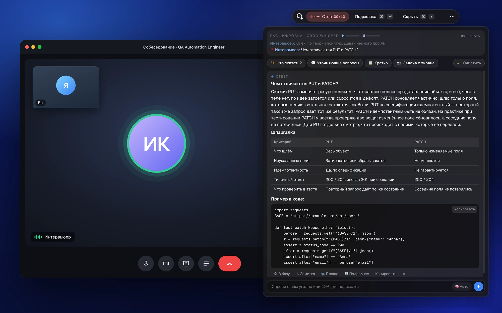
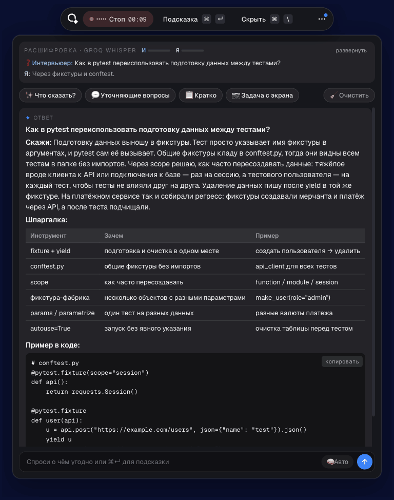
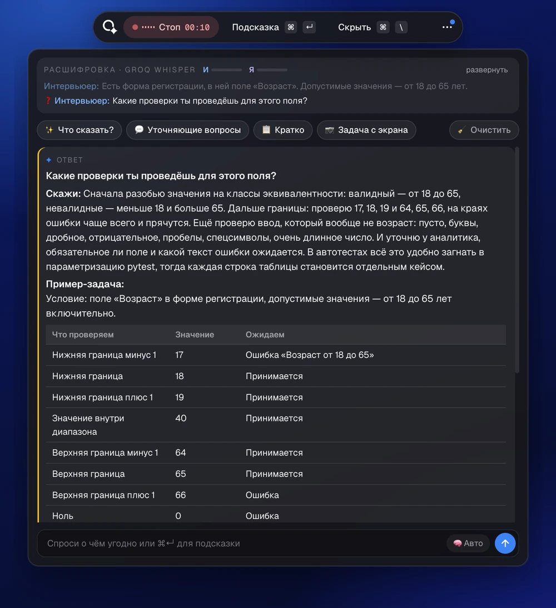
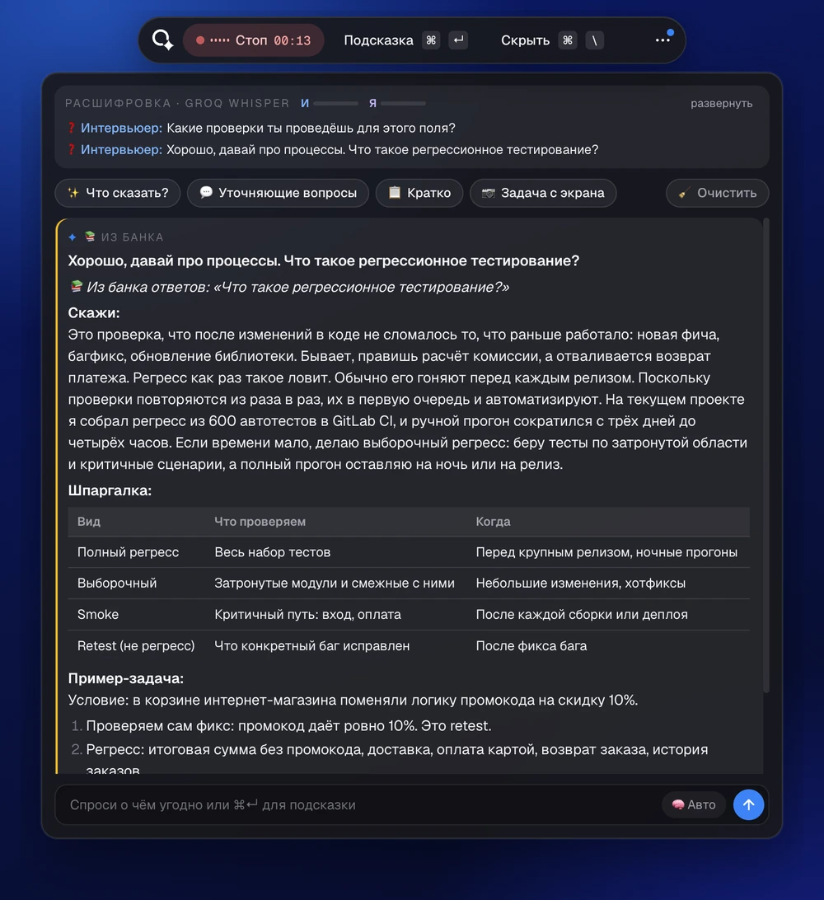
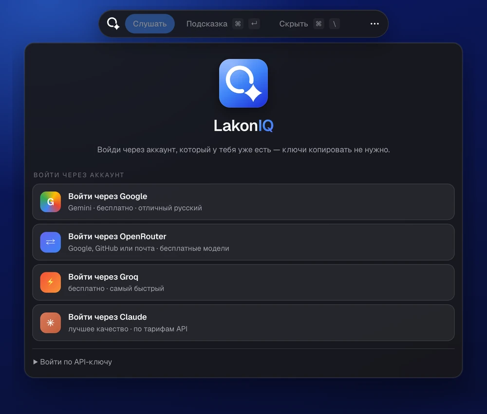
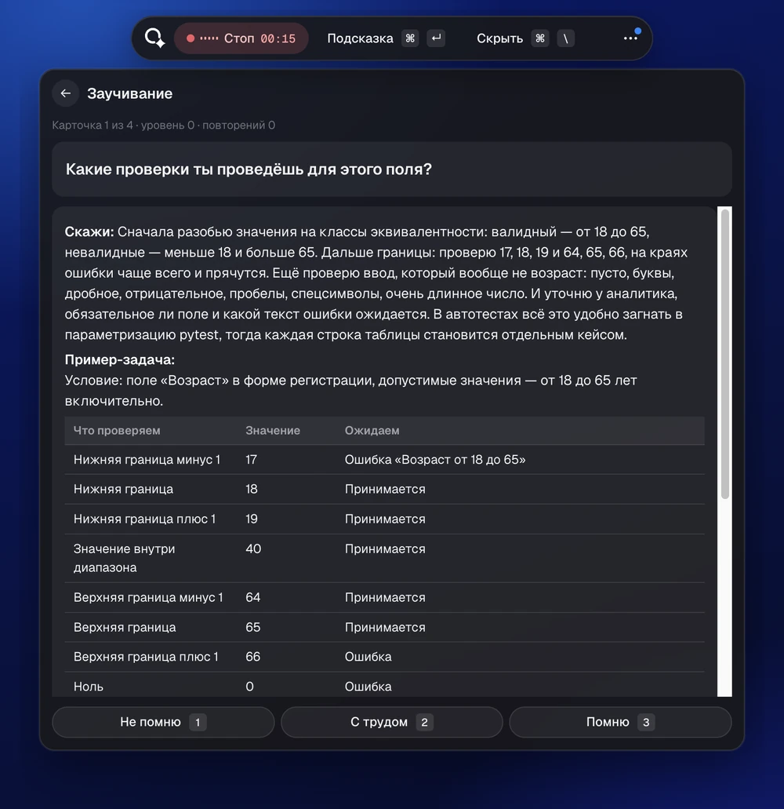

LakonIQ слушает созвон, понимает, где прозвучал вопрос, и показывает, что сказать: со шпаргалкой, примером и кодом. Работает поверх любого созвона, на бесплатных моделях.
LakonIQ работает на Mac. Открой эту страницу на компьютере Mac, чтобы скачать приложение.


Запись в реальном времени. Ответы Claude, резюме в демо вымышленное.
Тест-дизайн, API, SQL, автотесты, теория или опыт — формат ответа выбирается мгновенно, без лишнего запроса к ИИ.

Классы эквивалентности, границы и негативные случаи — без лишнего кода. Для API, SQL и автотестов — пример в коде.

Вопрос из банка — ответ появляется мгновенно, без запроса к модели. Ответы собираются у тебя бесплатно из открытых статей.

Google, OpenRouter или Groq: откроется страница сервиса, ключ подхватится сам. Есть Claude и локальная Ollama.

Отмечай ответы ★ — они вернутся карточками по системе Лейтнера. К следующему интервью они уже в голове.
Открой LakonIQ.dmg и перетащи приложение в «Программы».
Первый раз macOS не даст открыть приложение: Системные настройки → Конфиденциальность и безопасность → «Всё равно открыть». Затем выдай «Запись экрана и системного звука» и «Универсальный доступ».
Войди через Groq, Google или OpenRouter — бесплатно. Надень наушники, открой созвон и нажми «Слушать» ⌘ ⇧ L.
Почему macOS предупреждает? У проекта пока нет платной подписи Apple Developer ($99 в год), поэтому macOS не может проверить разработчика. Приложение собрано из открытого кода — его можно проверить или собрать самому одной командой.
Приложение бесплатное. Модели — тоже можно бесплатно: Groq, Gemini и бесплатные модели OpenRouter. Claude платный, по тарифам API. Распознавание речи бесплатно через Groq; Deepgram быстрее и даёт $200 при регистрации.
У проекта нет платной подписи Apple Developer, поэтому macOS не может проверить разработчика. Открой Системные настройки → Конфиденциальность и безопасность и нажми «Всё равно открыть» — это нужно один раз. На macOS 13–14 можно и так: правый клик по LakonIQ в «Программах» → «Открыть».
Да. LakonIQ — обычное окно поверх остальных: оно не прячется от демонстрации экрана, записи и прокторинга.
Готовая сборка — для Apple Silicon (M1 и новее). На Intel приложение собирается из исходников одной командой: ./build_mac.sh --install — инструкция на GitHub.
Нет. Звук созвона берётся из системы через ScreenCaptureKit — подойдут любые наушники, AirPods или проводные.
Нет: роль, резюме и вакансия задаются в настройках, и ответы подстраиваются под них. Для QA и Automation QA на Python есть готовый банк из 443 вопросов.
Только то, что нужно для ответа, и только выбранным тобой сервисам: звук фраз — сервису распознавания (Groq или Deepgram), вопрос, контекст разговора и резюме — выбранной модели, снимок экрана — когда ты сам просишь подсказку или решение задачи с экрана.